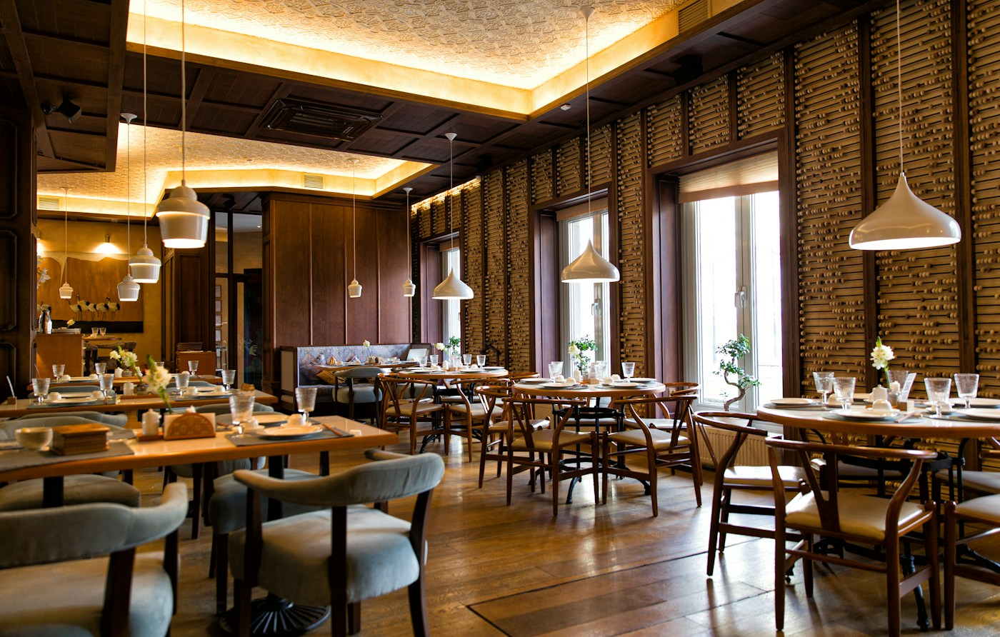

Burrata & nazomertomaten
Basilicumolie, geroosterd zuurdesembrood
€14
LEKKER ETEN. GOED GEZELSCHAP.
Woensdag–donderdag · 17:00–22:00
Vrijdag–zaterdag · 12:00–23:00
Zondag · 12:00–21:00
Amsterdam · voorbeeldlocatie
Voorbeeldlocatie · fictief bedrijf